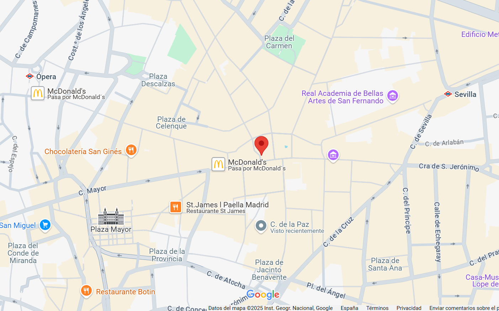

Nuestra Ubicación en Madrid
Encuéntranos fácilmente en el corazón de la ciudad

Dirección
Calle de la Salud, 28013 Madrid, España
Transporte Público
- Metro: Sol (Líneas 1, 2, 3)
- Autobuses: 3, 5, 15, 20, 51, 52
- Cercanías: Sol (C3, C4)
Horario de Atención
Atención Primaria
Lunes a Viernes: 8:00 - 20:00
Sábados: 9:00 - 14:00
Urgencias
24 horas todos los días
Servicios Especializados
Lunes a Jueves: 9:00 - 18:00
Viernes: 9:00 - 15:00
Contacto
Teléfonos
Información: 912 345 678
Citas: 912 345 679
Urgencias: 912 345 700
Correo Electrónico
informacion@centrosaludmadrid.es
citas@centrosaludmadrid.es
Aparcamiento
Parking público en Plaza Mayor (5 min)
Zona SER: ORA disponible